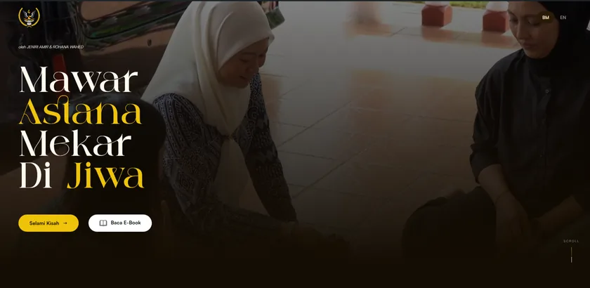
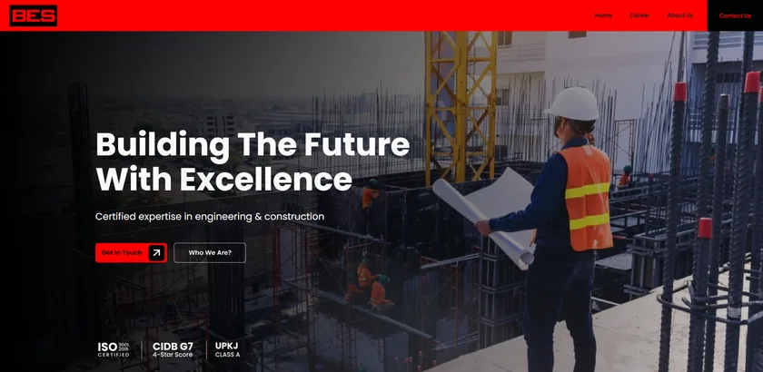
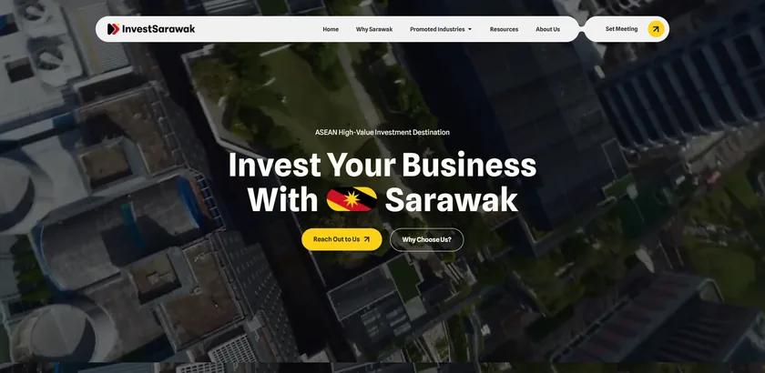
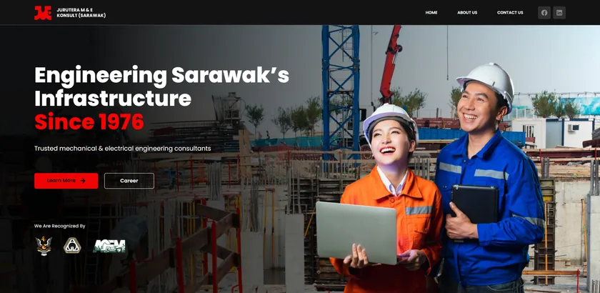

Web Design Kuching
Web Design That Drives Growth
Modern, responsive web design in Kuching and across Sarawak — built to load fast on a phone, earn trust quickly, and turn visitors into enquiries.
- Graphic Design
- UI/UX Design
- Web Design
- Copywriting
- Photography
- Videography
Web Design Kuching, Sarawak
Web Design For
Kuching Businesses
Most of Sarawak will meet your business on a phone, over mobile data, long before they meet you in person. We build for that first: quick to load, easy to read, and obvious about what to do next.

-

-

-

-

Benefits
Built for
Business Growth
In Kuching, a website competes with a Facebook page and a WhatsApp number. To be worth more than either, it has to earn trust in the first few seconds and make getting in touch effortless.
-
Build Trust & Credibility
-
Reach More Customers
-
Generate More Leads
-
Grow Your Business
Features
What Every
Website Includes
There is no basic tier. Every site we build ships with all of this, whether it runs to one page or forty.
-
Responsive Design
Every layout is built to hold up on phones, tablets, and desktops, so the experience never depends on the screen it arrives on.
-
User Experience
Clear structure and obvious next steps, so visitors find what they came for instead of hunting for it.
-
Fast Performance
Lean code and optimised images keep pages quick — which keeps both visitors and search engines happy.
-
Secure & Reliable
HTTPS, hardened configuration, and regular backups, so the site stays up and your data stays yours.
-
Scalable
Built with flexibility to grow alongside your business as your needs evolve.
The Approach
How We
Create Impact
Six stages, from the first conversation to handover. You see the work at the end of each one, so nothing about the finished site is a surprise.
-
UI/UX Design and Research
We create intuitive, user-focused interfaces through research, strategy, and thoughtful design to deliver seamless digital experiences.
-
Wireframe
We create clear wireframes that define structure, user flow, and functionality before visual design begins.
-
Mockup
We transform wireframes into high-fidelity mockups that showcase the final look and feel of your digital product.
-
Prototype
We create interactive prototypes that bring ideas to life, allowing you to validate concepts before development begins.
-
Build
We build responsive, production-ready websites that are quick to turn around without giving up performance or quality.
-
Deliver
We launch, optimise, and hand over a fully tested digital solution that’s ready to deliver real business results.